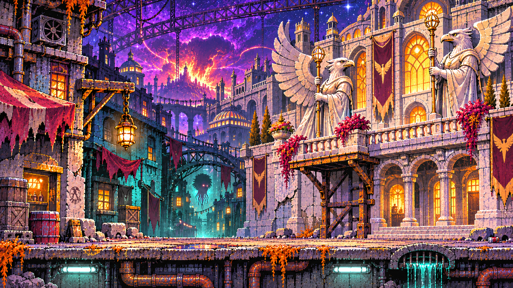

WHAT THE PLAYER ACTUALLY DOES
PHYSICAL OPPORTUNITY
WHY THE ROOM WORKS
STOP THE AGENT IF...

Wards and enchanted street lamps fail; a new safe route becomes visible.
A single announced prop-chain hazard; avoid or redirect via contact.
One genuinely authored falling structure with clear red contact volume.
Directional anomaly and the final safe stair; both heroes retain controls.
No class inventory, gear stripping screen, crafting, map quest hunt or permanent third controller.
Lamp, platform and wall failures must have actor/source events, warning and authentic contact — never VFX-only deaths.
GumGum is dead when found; Miss Quill dies before Remex; Remex is a captive, not an HP boss.
Only final S12 transfers Carl and Donut to Floor04; the earlier revealed circus stair is not active.